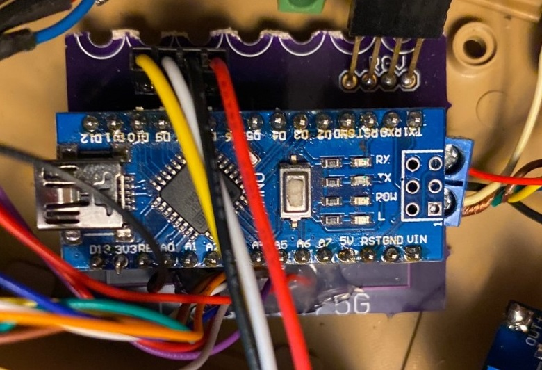

Nano MicroController
Requirements
- The Nano Microcontroller shall control the movement of the left and right tread motors
- The Nano Microcontroller shall control the left/right, up/down motion of the turret
- The Nano Microcontroller shall be driven by the commands received by the wifi-receiver
- The Nano Microcontroller shall be powered via the 5V voltage regulator
- The Nano Microcontroller shall be programmed via a usb interface, using the Arduino Integrated Development Environment (IDE)
Discussion
The logic for this device is in the form of an arduino sketch.

Circuit Diagram